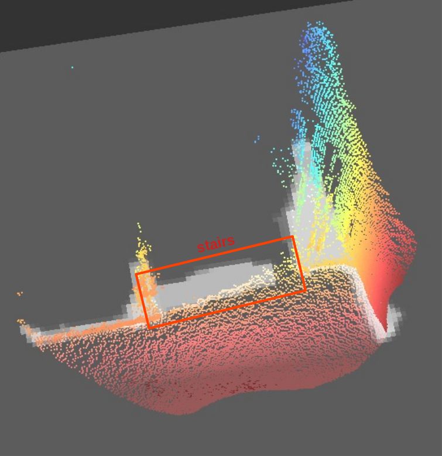
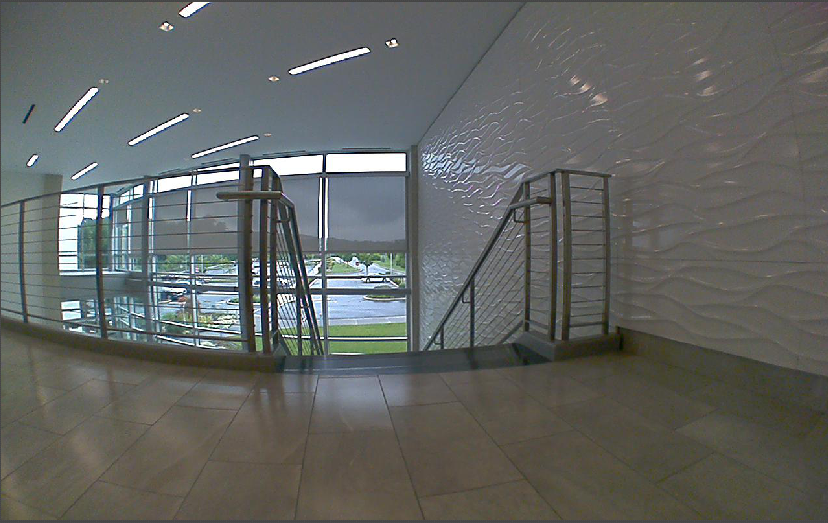

Negative obstacles
Note
This feature was added in firmware version 1.1.30.
ODS has the capability to detect negative obstacles, that is obstacles that are below the floor plane (holes, stairs, downward ramps, etc).
Prerequisites and limitations
To the ODS app, a negative obstacle is defined as:
At least 20 centimeter large along the X axis,
At least 20 centimeter large along the Y axis,
If the bottom of the negative obstacle is detected, it must be at least 20 centimeters below the floor plane.
Use cases considered for negative obstacles include:
Stairs
Loading ramps
Missing ventilation tiles in dust-free clean rooms
Note
We are using here the “robot” coordinate system: the X axis is pointing in the robot main driving direction, the Z axis is pointing upwards. The floor plane is defined by Z=0.
Negative obstacles will not be detected equally well in all mounting positions. Due to the angle at which light is reflected from the ground, more or less range can be achieved for ground detection. Negative obstacle detection relies in part on being able to see pixels that belong to the ground, so in cases where range is limited, performance will be reduced. Also note that the visibility of pixels below ground is sacrificed by low camera mountings. For more details on mounting recommendations, refer to the mounting documentation.
Due to the variability in true positive detections depending on the mounting position and the environment, we strongly encourage the user to perform tests in their facility. Take a look at our documentation about performance verification and about the possible iToF artifacts you can encounter.
Typically, negative obstacles are not detected as far as positive obstacles of a similar size. Consequently, we recommend that the user limits the robot travel speed to a known safe value in environments known to contain negative obstacles.
Enable the negative obstacle detection
Negative obstacle detection must be enabled for each individual port where floor is in the field of view. This feature is disabled by default.
The JSON below shows the enableNegativeObstacles parameter to consider to enable this feature for port0 (change the port number to fit your configuration):
{
"applications":{
"instances":{
"port0":{
"negObst": {
"enableNegativeObstacles": true
}
}
}
}
}
The negative obstacle detection is a feature that requires a switch to “CONF” state to be enabled, so it is not recommended to switch that function on and off dynamically but to use a static setting during robot operation.
In Python, for example, the feature can be enable with the code below. Note that this code assumes the existence of an app0 instance using a camera connected to port0.
# 1. Set the application to "CONF" state
o3r.set({"applications": {"instances": {"app0": {"state": "CONF"}}}})
# 2. Enable the negative obstacle feature
o3r.set({"applications":{"instances": {"app0":{"port0":{"negObst": {"enableNegativeObstacles": True}}}}}})
# 3. Set the application instance back to RUN state
o3r.set({"applications": {"instances": {"app0": {"state": "RUN"}}}})
Negative obstacles in the occupancy grid
Negative obstacles will appear on the occupancy grid just like other obstacles do. Once the occupancy grid is constructed, there is no way to differentiate what obstacle is above or below the floor plane.
In the image below, we show the point cloud and occupancy grid corresponding to a staircase surrounded by a railing.
Point cloud and occupancy grid view |
Corresponding RGB image |
|---|---|
 |
 |